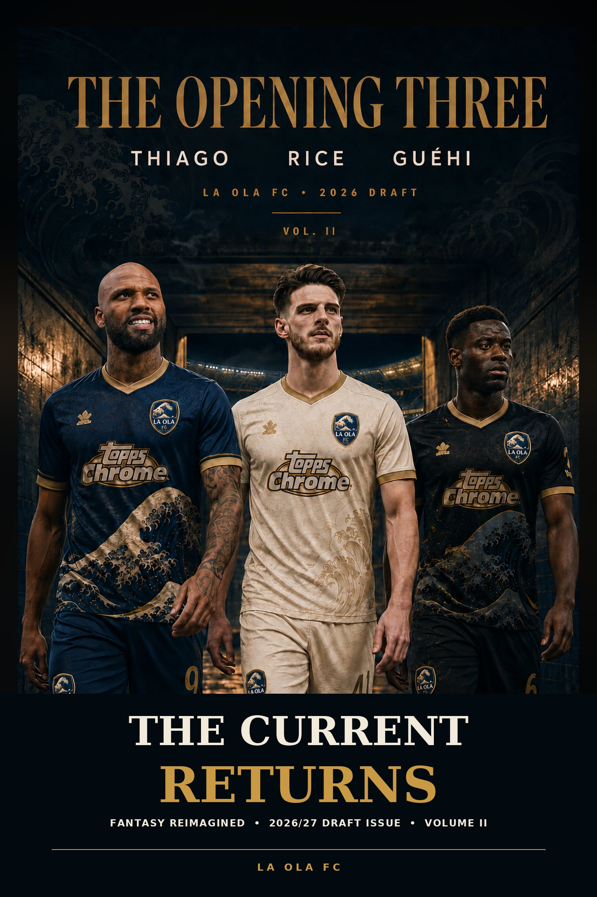
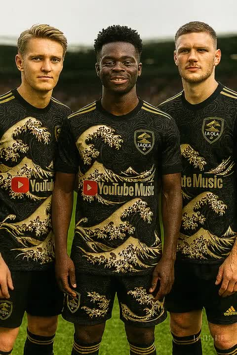
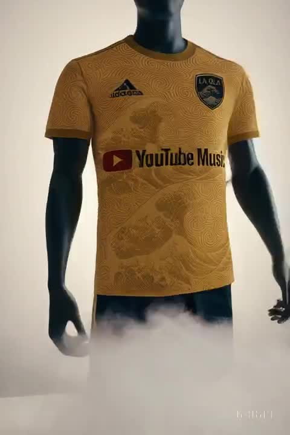
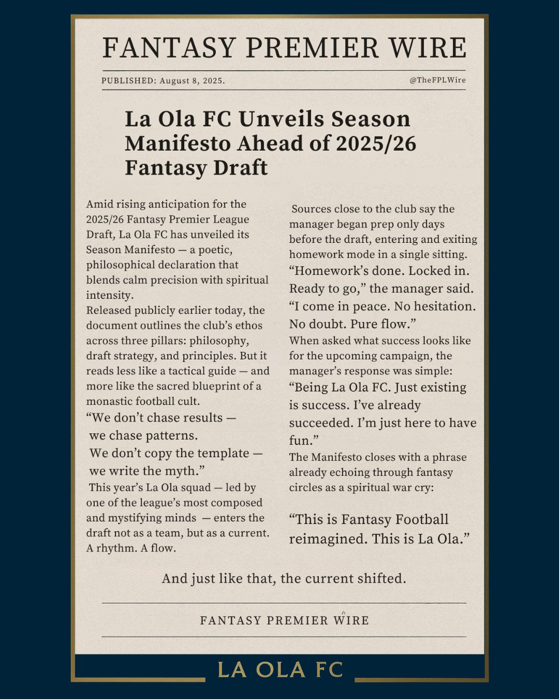
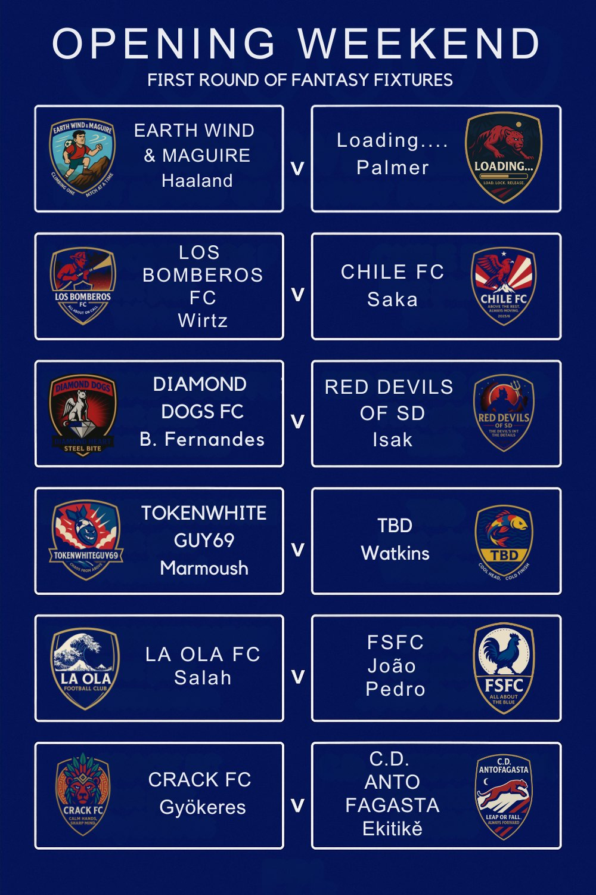
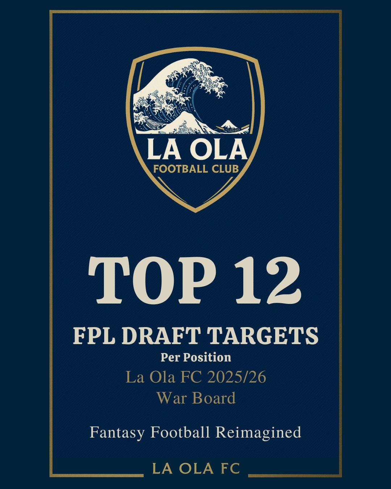
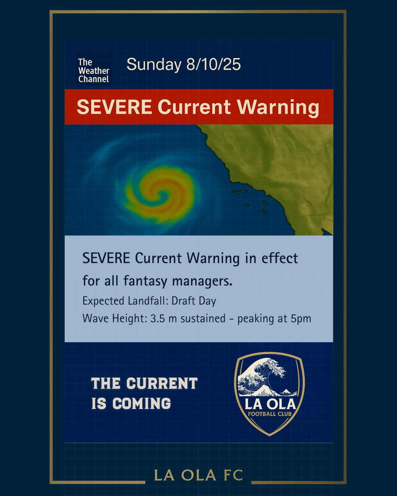

COVER FEATURE
The Current Returns
La Ola FC enters a new season with a new armour, a new board and the same current underneath it all.
Read from the feature → LA OLA FCFANTASY PREMIER LEAGUE · 26/27
OLA HQ ↗
LA OLA FCFANTASY PREMIER LEAGUE · 26/27
OLA HQ ↗
LA OLA FC · CURRENT SEASON
A football club built like an editorial world. The squad, the shirts, the draft room and every story the season leaves behind.
 THE 2026/27 ISSUE READ →
THE 2026/27 ISSUE READ →
2026/27 · CURRENT SEASON
The final draft magazine is the preseason record: twelve clubs, three models, one board. Preserved in the exact 27-page sequence — then tested against what actually happens.

COVER FEATURE
La Ola FC enters a new season with a new armour, a new board and the same current underneath it all.
Read from the feature →THE DRAFT ROOM
Custom ranking. Official draft rank. Production projection. The preseason report puts every club through all three lenses.
Enter the board →FPL DRAFT · LIVE SEASON
The club site stays the club site. The live league now has its own sports center — standings, every matchup, La Ola FC, records, roster data and the season archive in one place.
LA OLA FC · FIRST TEAM
Not a generic FPL gallery. La Ola FC is the front door; league analysis and publications live inside the club.

SQUAD
The first-team identity and the players carrying the current into 2026/27.

KITS
Navy home. Cream away. Near-black third. Great Wave identity across the full set.
CLUB DNA
“Drafting with the current.”
FOOTBALL CROSSOVER
Arsenal is the real club. La Ola FC is the fantasy club. FPL Draft is the competition. This is the connective tissue between them — only where the football actually overlaps.
GUNNERS IN LA OLA FC
Reading the current Draft roster…
FROM NORTH LONDON
Loading the latest Arsenal snapshot…
PUBLICATIONS
Complete issues, not loose image dumps. Each publication stays intact and readable in its original order.
2026/27 · PRIMARY
Final draft magazine · 27 pages
Read issue →
2025/26 · ARCHIVE
The original club-world study, preserved in the archive.

2025/26 · ARCHIVE
Preserved campaign work from the club’s first visual season.
FILM ROOM · 2025/26
Five preserved films from the club’s first visual season.
CLUB ARCHIVE
2025/26 stays visible as history. Earlier 2026/27 work stays preserved as evolution — never confused with the final.


2026/27 · EVOLUTION
The previous 28-page Canva edition remains intact as an evolution record. It is not the current primary publication.
Open the 28-page archive →THE SEASON KEEPS MOVING
Every gameweek adds evidence. Every season adds history. The club world grows without replacing what came before.